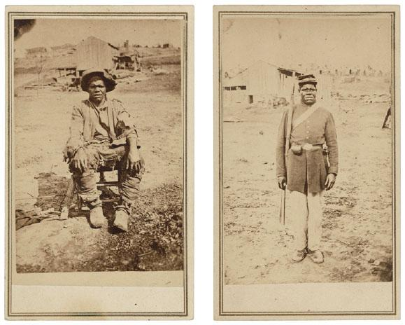

When the war first began, Lincoln did not consider the employment of freed black soldiers for the union army. Lincoln was focused on preserving the union at all cost, including keeping border states from seceeding. Frederick Douglass held a much more radical point of view; he believed that black troops needed to be mobilized, emancipation needed to be enacted, and the fugitive slave law needed to be repealed immediately. Eventually, Lincoln also came to recognize the importance of arming black soldiers to help the war effort. After two years of brutal war, Lincoln passed the Second Confiscation and Militia Act of July 17, 1862, which authorized the president "to employ as many persons of African descent as he may deem necessary and proper for the suppression of this rebellion."

Though blacks could now join union ranks, their social status still affected their experience as soldiers: "Black soldiers served in segregated units under white officers, received unequal pay, were often assigned the most menial labor, and went into battle with the knowledge that Confederate troops would offer them no quarter in defeat" (Lyons 3). Though blacks had to deal with these inequalities during the war, their participation as soldiers was often enough to raise their spirits and social recognition--and photography played an important role in this process. Photography served as a medium for representing the transformation of former slaves to well polished soldiers. Photographs of black soldiers aided in fighting stereotypes and racist caricatures brought against them.
In Pictures and Progress, Maurice Wallace states "whereas the terms black and man could hardly create a politically meaningful syntax together before emancipation, the black soldier portrait envisaged the possibility of a spectacular new grammar and social logic" (Wallace 247). This "new grammar and social logic" brought upon by the image of the black soldier is similar to Frederick Douglass' idea of photography bringing a new order. Images of black soldiers provided a sort of social upliftment, making them more official. Wallace uses the juxtaposition of an image of the same man, Hubbard Pryor, as a slave and as a soldier to demonstrate the transition of social order. The two images are shown above. The first image of Hubbard is when he had recently escaped from slavery while the second image is of Hubbard after enlisting into the army. The change of clothing from his rags of slavery to the finely pressed army uniform represent Hubbards' change of social status. Hubbard's pose also changes: at first he is hunched over and sitting down, while as a soldier he stands erect, arms straight, in a more put-together manner. This transformation demonstrates not only the social elevation of this former slave, but it also hints toward the fact that Hubbard had the dignity clearly visible in the right image all along.